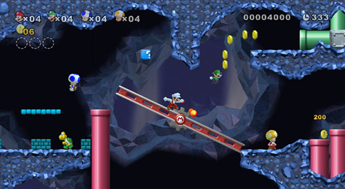

Like many others, I briefly got my hands on the New Super Mario Bros. Wii demo at E3 this June. Still being a sucker for the franchise, I had some fun with it, and despite the simplicity of the DS game on which it was based, I was quite fond of Mario's recent foray into 2D gameplay. New Super Mario Bros. DS was by no means as complex, expansive, or rewarding as Super Mario 3 and its ilk, but it was a refreshing reminder of the good ol' days, and carried the promise of hopefully more retro Mario games.
After the initial enjoyment of a bunch of SMB characters running around on an old-school level subsided, I realized why the idea felt so comfortable and familiar. The fact that side-scrolling co-op platformers have been done many times before (from Chip N' Dale's Rescue Rangers on NES to Little Big Planet on PS3) notwithstanding, co-op in Mario felt like something that should have been done a long time ago. Considering all the advances Nintendo made in the genre, why did it take them until now to come up with this, after its been done so much before?

This feeling of general surprise at Nintendo's failure to capitalize on this much earlier was then accompanied by a distinct and sudden memory of playing Super Mario Bros. on NES for the first time and starting up two-player mode with my little brother. I remembered the feeling of disappointment that struck me when I realized that we had to actually take turns playing - we couldn't play together. The fact that this was a six-year-old's first assumption on seeing that there was a two-player mode in the game makes me wonder - did it really take a Little Big Planet for Nintendo to come up with this? Having basically invented the 2D platformer in its heyday, this idea couldn't possibly have been pushing their creative limits that much, could it? And technologically speaking it was certainly do-able.